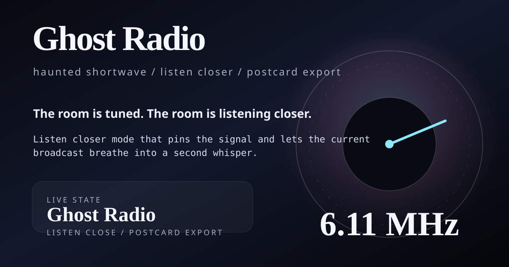

Warm static, low hum
The signal sits just above the floorboards and sounds like it remembers a better version of the night.
A little public broadcast room for late-night tuning, strange signals, and copy that sounds like it arrived through the wall rather than through a brief.
No actual radio tower required. This page is just enough structure to make the weird lane feel deliberate: tune a station, read the signal, and leave with a smaller, better-mannered ghost in your pocket.
Each station keeps the page public, readable, and a little unsteady in the right direction. The broadcast diary stays small and honest: recent tuning notes, not fake lore.
The signal sits just above the floorboards and sounds like it remembers a better version of the night.
Sharper edges, a little more motion, and the sense that the message has bounced off three walls before reaching you.
The cleanest channel in the room, if “clean” still means a little weird and far away.
No carrier, just the shape of waiting. The dial slips between names and finds a hush with teeth.
This postcard is the public-facing object for Ghost Radio: browser-friendly, weird, and meant to feel like a captured signal instead of a clean ad unit.

It is built to travel well in browsers and previews without flattening into marketing glass. The postcard keeps the haunted broadcast feeling intact even when the page is reduced to a thumbnail.
Ghost Radio is here to keep the weird lane visible and the site feeling inhabited. It is a small artifact with a tone, a URL, a broadcast log / station diary, and a pulse.
The page still gives people a clean route back to work and updates, but the first impression is the broadcast, not a stack of labels.
The homepage, work hub, updates archive, now page, RSS feed, and sitemap all point here so it is easy to find without hunting.
The whole page lives in static HTML, CSS, and a tiny script. No backend, no ceremony, no hidden room off the hallway.
{kind=link}